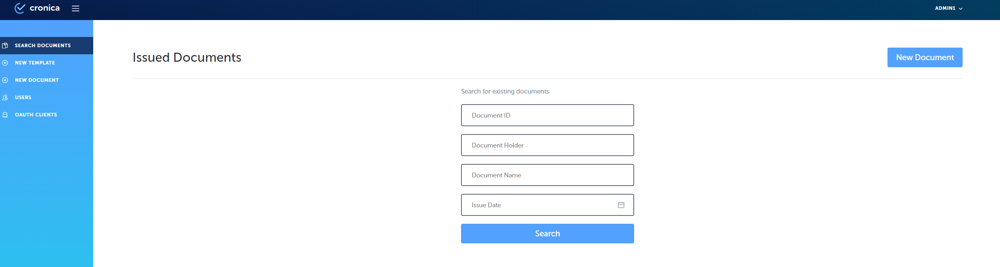
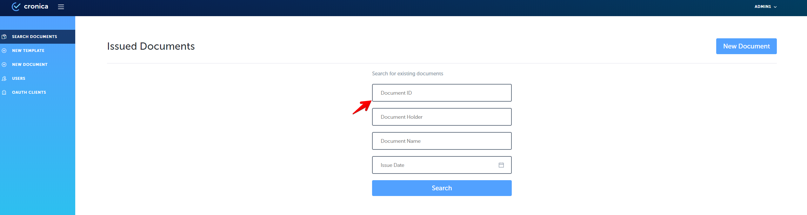
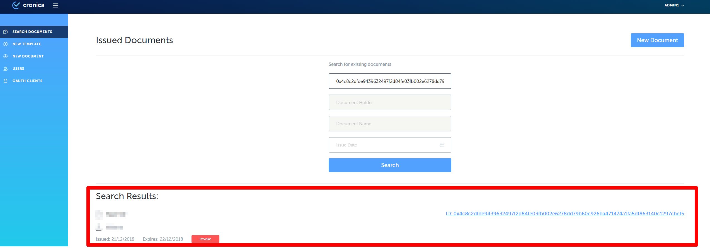
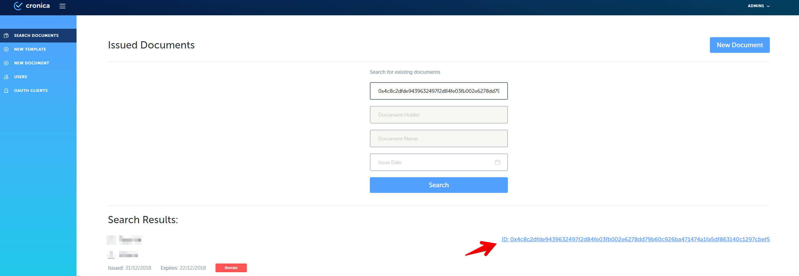

Step-by-step guide
1. Go to the Issuer site of Cronica.io and authorize;
2. Click on ‘Search document’ button on the left side menu;
3. Observe document search screen;

4. Insert ID in the “Document ID”

5. At the bottom of our page we get the search result

6. By clicking on the document ID, the pdf document is displayed.
